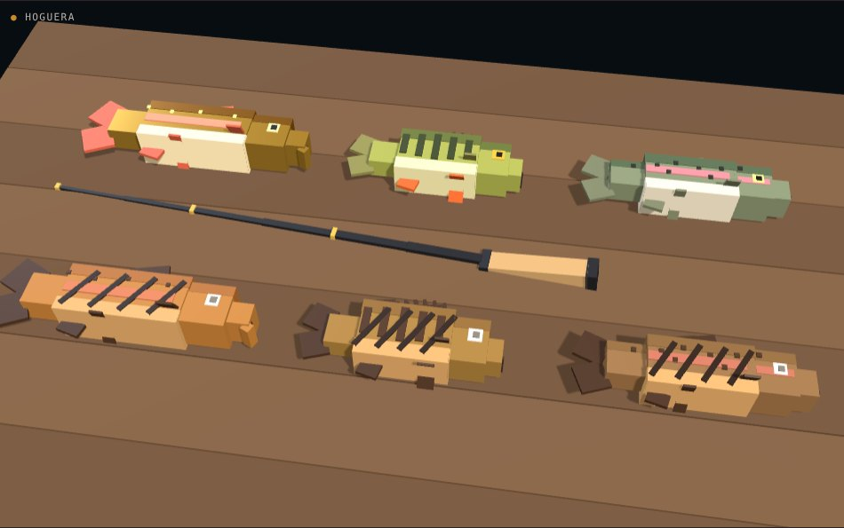

Construido con los mismos planos que usa el instalador de Studio: cada bloque es una Part soldada al Handle de su herramienta.
| Pez | Sale | Crudo | Cocinado |
|---|---|---|---|
| Trucha | 60 % | +8 vida · +15 comida | +25 vida · +35 comida |
| Perca | 30 % | +6 vida · +12 comida | +20 vida · +30 comida |
| Salmón dorado | 10 % | +15 vida · +25 comida | +50 vida · +60 comida |
Hunger en el jugador, lo sube. Y avisa con el evento FishEaten para lo que quieras.roblox/InstallFishing.lua en la Command Bar. Pone la caña en el StarterPack y una hoguera de prueba.FishZone (las del pez infectado también: cuidado, que saltan a la orilla).Campfire.sounds/*.ogg y pega sus ids en SOUND_IDS.